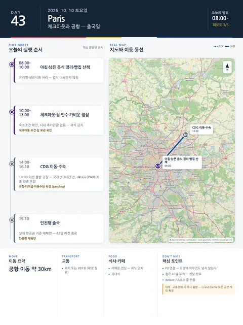

Day 43 · 10/10 토 · Paris→Seoul
P0 연결
- 핵심 실행
- 체크아웃·CDG·19:10 출국
- 권장 출발
- 호텔 기준 14:00 전후 출발 권장
- 완충
- 공항 3시간 전 도착
시간표
| 시간 | 일정 | 실행 포인트 |
|---|---|---|
| 08:00–09:00 | 숙소 아침·남은 음식 정리 | 유리병·냉장식품 처리 |
| 09:00–10:00 | 숙소 반경 빵집 또는 짧은 산책 | 멀리 이동하지 않음 |
| 10:00–12:00 | 체크아웃·짐 인수 | 숙소조건 확인, 시내 추가관광 없음 |
| 12:00–13:00 | 가벼운 점심 | 공항 전 과식 금지 |
| 14:00 이전 권장 | CDG 이동 시작 | 항공편 19:10 기준, 교통장애·보안 여유 확보 |
| 19:10 예정 | 인천행 출국 | 실제 항공권 기준 재확인 |
이 날의 메모
체크아웃과 공항 — 공연도 퍼레이드도 넣지 않는 출국일 출국
제외: Fête des Vendanges Grand Défilé, 17:00 Este Mundo, 19:30 Il Barbiere, 기타 고정공연. 모두 출국 안전여유와 충돌한다.
상세 실행 확인
- 최고 리스크
- 교통장애·수하물·체크아웃
- 우선 삭제
- 도심 추가관광 전부
- 대체안
- 숙소권 짧은 산책만
- 식사·휴식
- 도심 또는 공항 간단식
- 잠금 필요
- 항공·공항이동
Google 실행지도
귀국 — CDG 19:10 인천행
지도 펼치기
지도는 펼칠 때만 불러옵니다.
Daily Action Map

실제 좌표와 OpenStreetMap을 사용한 실행용 요약입니다. 도로·대중교통 상황은 출발 직전에 다시 확인하세요.